Game Board(fig1)
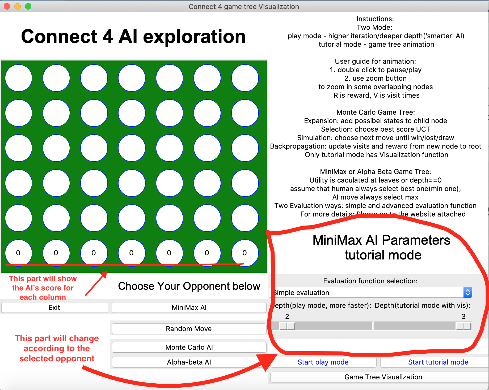How AI thinks
AI games usually have too many algorithms behind them, and its "thinking" process is complex to get a concrete idea for players. Although there are many useful adversarial search algorithms right now, it is still too abstract to connect those complex algorithms with the games we play together. Also, it is necessary to clarify how the game tree expand while keeping the environment invariant. This work will design an AI game tree visualization system that enables flexible visual adversarial search algorithm exploration by allowing the user to modify AI algorithm parameters, playing against the AI, and seeing the real-time animation. During the playing procedures, for each predicted AI step, the system will visualize the game tree and the animation of its expanding and corresponding AI algorithm's corresponding properties. The system will deploy a simple game engine for a simple game, connect-4, and synchronize another interface for the game tree algorithm interactive animation. With the system, the user can explore to find better properties (for example, iteration) of the AI algorithm and find a better combination of optimization methods, evaluation function, and all other components in adversarial search algorithms. Users could also see the performance comparison between algorithms, such as the visualization of their win rate changing as the parameters changes. On the other hand, the system could work as a visualization tool to quickly comprehend complex AI algorithms and be used as a teaching tool. This paper will introduce how to implement the system in detail, including three parts: game engine implementation, game tree algorithms, interactive and real-time interactive animation, and comparison visualization.
Author: Sherry/Xueran Ma
Will explain the pics and UI components below
Game Board(fig1)
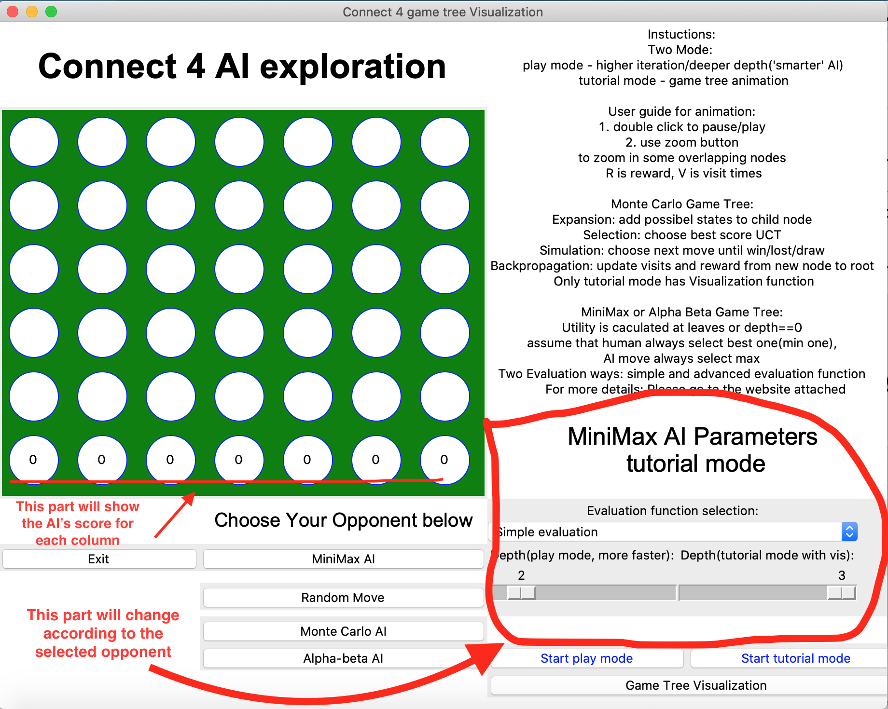MiniMax Game tree animation (fig2)
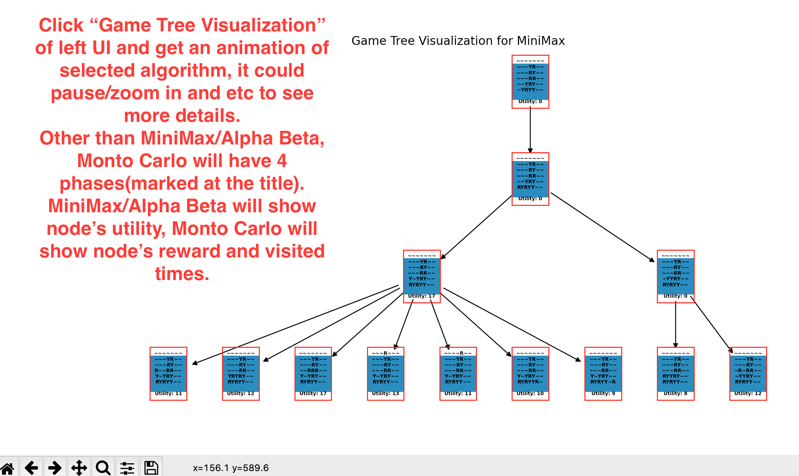Monto Carlo Animation(fig3)
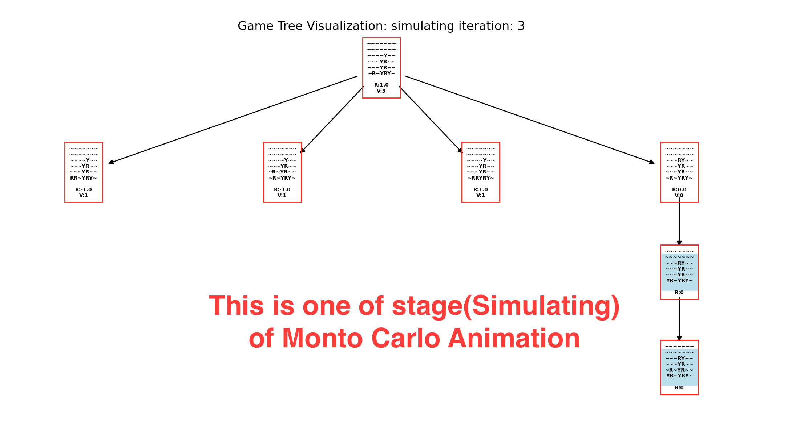Alpha Beta Animation(fig4)
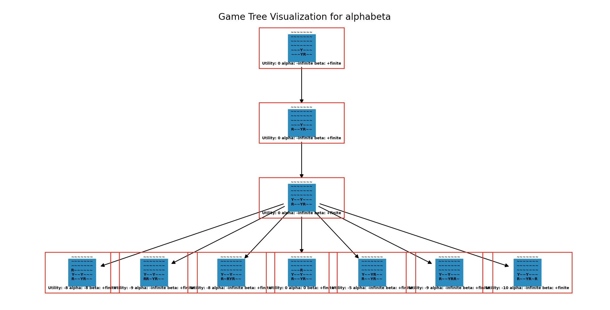In source folder, 1. Game system: game is executable file (pls wait several mins to lauch the canvas), game.py is the source file
2. Comparison visualization notebook: Performance_Comparison.ipynb, could open using jupyter notebook or google colab
Source FolderClick Game executation file to start the app but please wait around several mins to launch.
1. Two modes: there are two modes for each algorithm: play mode and tutorial mode, tutorial mode has visualization functions thus it has limitations on the parameters of algorithms, play mode trades off visualization function for more complex and smarter AI (for example, higher simulation iteration or deeper depth)
2. Algorithms and their modifiable parameters:
Monto Carlo: iteration for its simulation stage, factor inside UTC formula
MiniMax and Alpha-Beta: both algorithms have parameters -- the maximum depth, evaluation function(there are two choices, will introduce below)
Random: For comparison, will randomly select next move, no parameters
3. UI explaination
As fig1, the 7 numbers on board show the AI prediction for its each step -- MiniMax and Alpha Beta will show its uitility(simple evaluation and advanced evaluation will differ, see details below at Advanced Heuristic and Evaluation Function part). Monto Carlo will show UTC score
As fig2/3/4, Below is animation guide
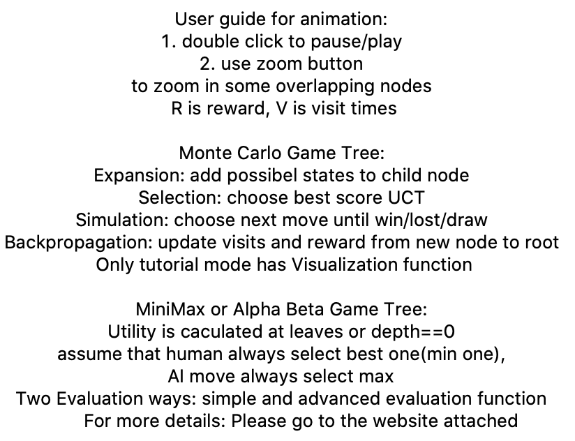Notebook
Monto Carlo VS Random Player: CPU times: user 19min 39s, sys: 3.95 s, total: 19min 43s Wall time: 43min 4s
Monto Carlo VS MiniMax: CPU times: user 40min 13s, sys: 8.67 s, total: 40min 21s Wall time: 1h 20min 51s
Monto Carlo VS Monto Carlo: CPU times: user 1h 25min 25s, sys: 28.4 s, total: 1h 25min 53s Wall time: 2h 8min 24s
Monto Carlo VS Alpha Beta: CPU times: user 45min 33s, sys: 9.19 s, total: 45min 42s Wall time: 1h 29min 14s
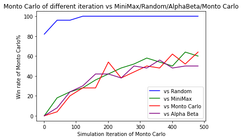Alpha Beta VS Random Player: CPU times: user 16min 23s, sys: 2.94 s, total: 16min 26s Wall time: 17min 8s
Alpha Beta VS MiniMax: CPU times: user 17min 33s, sys: 2.04 s, total: 17min 35s Wall time: 18min 54s
Alpha Beta VS Monto Carlo: CPU times: user 39min 55s, sys: 13.2 s, total: 40min 9s Wall time: 2h 25min 13s Wall time: 2h 8min 24s
Alpha Beta VS Alpha Beta: CPU times: user 27min 19s, sys: 4.7 s, total: 27min 23s Wall time: 27min 50s
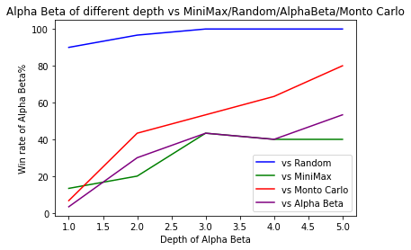Evaluation Comparison in 50 fights:
Simple evaluation vs Advanced evaluation
Use simple evaluation, win 18 out of 50
Use advanced evaluation, win 22 out of 50
Draw 10 out of 50
Unlike simple evaluation(only can evaluate leaf node, all other node will return 0. Leaf node win get 1 utility, lose -1), I also designed another evalution function which could evaluate also intermediate node and make the AI smarter for MiniMax and Alpha Beta Algorithm. In the connect-4 game, states are all possible boards and the number of actions per state varies from 0 to 7 which depends on how many columns are still available to fill.
What heuristic? Why
For both the implementations of the alpha-beta search algorithm and minimax search algorithm, I cut off the search at depth(default is 3, which could be modified by the user on the UI page) in order to save the time spent for each round. Consider the use of depth limit, probably the utilities of leaves are not accessible before we cut off the tree, so I use a heuristic evaluation function to compute the estimated desirability of a state, in other words, the estimated value of win at the state. The heuristic evaluation function is described below:
1. Initially, for each position inside the board, I compute the number of four connected positions which include that position by hand, and I got the table:
[[3, 4, 5, 7, 5, 4, 3],
[4, 6, 8, 10, 8, 6, 4],
[5, 8, 11, 13, 11, 8, 5],
[5, 8, 11, 13, 11, 8, 5],
[4, 6, 8, 10, 8, 6, 4],
[3, 4, 5, 7, 5, 4, 3]]
Here are two examples about how to understand the table:
For the left top position, it has a value of 3 because it has the three possibilities of connecting 4 positions as follows:
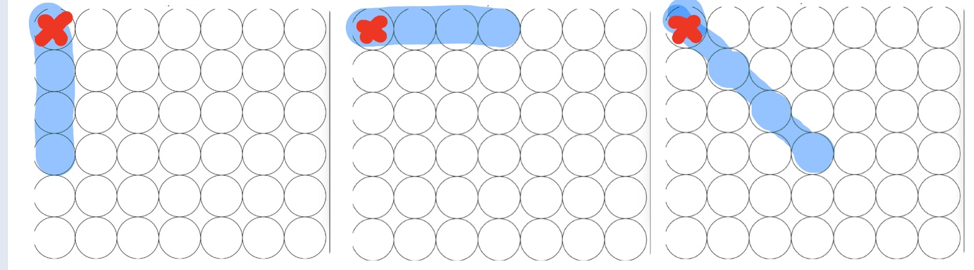
For the first column second-row position, it has a value of 4 because it has the four possibilities of connecting 4 positions as follows:
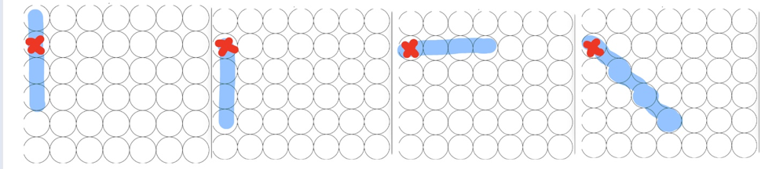
In the same way, I got the whole table. Sum up the table, the value is 138.
I would like to compute the evaluation of each state so that it could estimate how close the current state is to win. Obviously, when the next state has more possibilities of connecting 4 positions, then the estimation of the future is more optimistic. So initial evaluation function will sum up the total number of possible four connected positions for all the current player’s positions and minus up the total number of possible four connected positions for all the opponent’s positions.
Eval = (value[position] for each current player’s position of current board) -(value[position] for each opponent’s position of current board)Here value[position] is the value at a position of the table given above. However, the table values need some other extensions, as follows.
2. Block opponent and Form 4 connected
However, before computing the value as above, we need to check if the current board state has any connected 4 positions whatever for the opponent or the current player. So inside the evaluation, firstly, I check the current board, if any connected4 exist, whatever for the opponent or current player, evaluation function return what the check function return, the check function is as followings:
a. If the opponent has 4 connected position, check function return -1000
b. If the current player has 4 connected position, return 1000
c. Otherwise, just return 0, which means no connected4 found
The above check function is also used at alpha_beta_search in order to cut the depth if a connected4 is found at an earlier depth.
How do I implement the check function to find the connected4? Below is a simple sketch of four possible solutions, 4 connected positions could form lines to the right, down, and diagonal up and to right, down, and to the right. So inside the picture, the positions inside the green rectangle are those possible positions that could form lines of 4 directions separately. Implementations could just iterate through those positions.
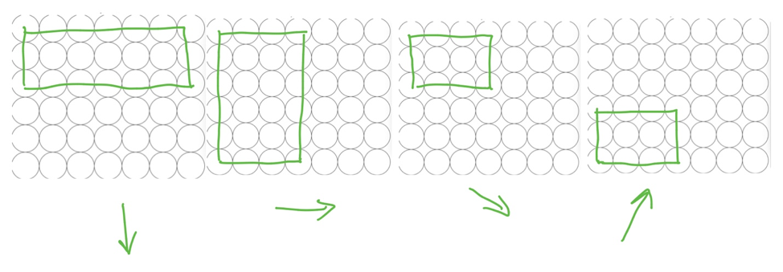